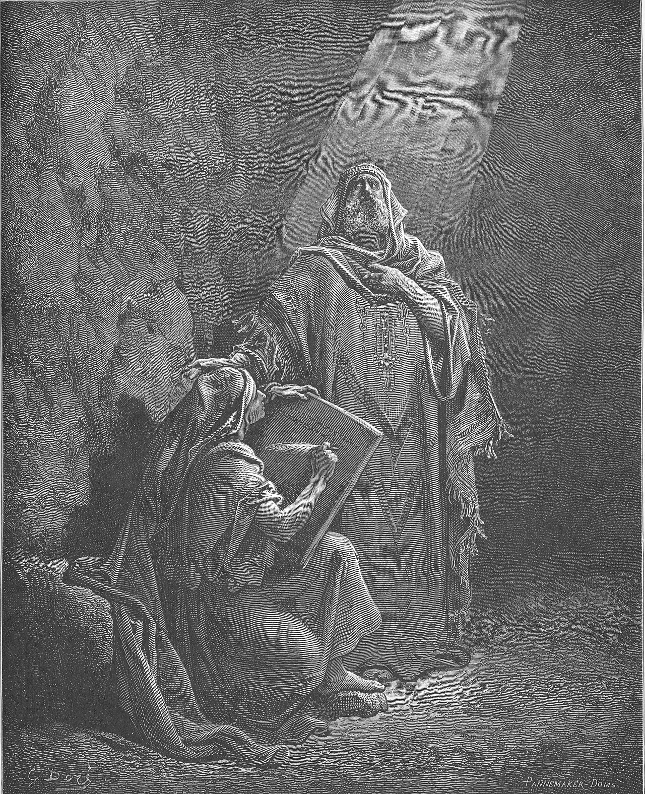

Jeremiah 17 — The Mister Translation

Jeremiah 17:1. The chapter opens with sin written with a pen of iron on the tablet of the heart. Doré draws a different writing from the same book: Baruch taking down the words of Jeremiah (Jeremiah 36), with the prophet in a shaft of light. The scene is not in this chapter, and the room, the light and the tablet are the engraver’s.

Translator's Notes — verse by verse
⭐ Written, and cut deeper than writing. The chapter opens with a document: “with a pen of iron” stands in two verses, here and Job 19:24, and “with the point of a diamond” stands in this one verse. Shamir is a stone so hard that it cuts other stone. The KJV has “The sin of Judah is written with a pen of iron, and with the point of a diamond”, the NWT 1984 “The sin of Judah is written down with an iron stylus” and the TLB “My people sin as though commanded to”, which is the translators’ reading and not a word of the Hebrew.
⭐ The tablet of the heart. “engraved on the tablet of their heart” stands in this one verse. The KJV has “it is graven upon the table of their heart, and upon the horns of your altars” and the NIV “on the tablets of their hearts and on the horns of their altars”. ⚠ The Hebrew has libbam, “their heart”, and then mizbechotekhem, “your altars”: it turns from they to you inside one verse, and the ASV and the KJV keep “your” where the NIV and the Douay print “their”. A tablet of the heart is a tablet where a father’s teaching should be written: “upon the tablet of your heart” stands in two verses, Proverbs 3:3 (now on these pages) and Proverbs 7:3, as a command to write the teaching there. Here the writing has already been done, with iron, and it is sin. Paul turns it over: a letter “written not with ink but with the Spirit of the living God, not on stone tablets but on tablets of human hearts” (2 Corinthians 3:3, now on these pages).
⭐ Their sons remember. Verse 2 says what the sin is: their sons remember their altars and their Asherim, by the leafy tree on the high hills. The KJV has “Whilst their children remember their altars and their groves by the green trees upon the high hills”, the ASV “their Asherim”, the NIV “Asherah poles beside the spreading trees” and the NWT 1984 “their sacred poles beside a luxuriant tree”. The Douay has “When their children shall remember their altars, and their groves, and their green trees upon the high mountains”, and the TLB “Their youths do not forget to sin”. What is remembered is not the covenant.
⚠ Whose mountain? Verse 3 begins harari baSadeh, and the shelf cannot agree where it belongs. The KJV has “O my mountain in the field, I will give thy substance and all thy treasures to the spoil”, so that the mountain is addressed, and the NIV “My mountain in the land and your wealth and all your treasures I will give away as plunder”. The NWT 1984 ends verse 2 with it, “[on] the mountains in the field”, so that it names where the altars stood, and the Douay has “Sacrificing in the field: I will give thy strength, and all thy treasures to the spoil”. The Living Bible folds the verse into the one before it. This translation keeps the address to the mountain, which may mean Jerusalem, and says here that the Hebrew allows both.
⭐ Let go. Verse 4 begins with a verb, “and you will let go”, veshamatta, which stands in this one verse, from shamat, the verb of the sabbatical release, shemittah, where a creditor lets go of what he is owed and the land is let go of every seventh year (Exodus 23:11, Deuteronomy 15:1). Here the land itself is released, and Judah lets go of its inheritance: the KJV has “shalt discontinue from thine heritage that I gave thee”, the NIV “Through your own fault you will lose the inheritance I gave you”, the NWT 1984 “you let loose, even of your own accord, from your hereditary possession” and the Douay “thou shalt be left stripped of thy inheritance”. The chapter will end on the sabbath, and it begins its warning with this word.
⭐ A fire kindled. “for you have kindled a fire in my anger” stands in this one verse, and its older form, “for a fire is kindled in my anger”, stands in two verses: Deuteronomy 32:22 (now on these pages), in the Song of Moses, and Jeremiah 15:14. Jeremiah has put the people in the verb: the fire that was Jehovah’s is now one they have lit. The KJV has “for ye have kindled a fire in mine anger, which shall burn for ever”, the NIV “for you have kindled my anger, and it will burn forever” and the NWT 1984 “for as a fire YOU people have been ignited in my anger”.
⭐ Cursed. “Cursed is the man who trusts in man” stands in this one verse. The word for man is gever, a strong man, a man at his strength, and then adam, the man of the ground: the KJV has “Cursed be the man that trusteth in man, and maketh flesh his arm”, the NIV “Cursed is the one who trusts in man, who draws strength from mere flesh” and the NWT 1984 “Cursed is the able-bodied man who puts his trust in earthling man”, which prints the two words apart. The TLB has “The Lord says: Cursed is the man who puts his trust in mortal man”. To make flesh your arm is to make a thing that dies the strength you lean on.
⚠ What is an ar’ar? “like a shrub”, ke’ar’ar, stands in this one verse in this form, and the plant is uncertain, and the shelf has six answers: the KJV and the ASV “like the heath in the desert”, the NIV “like a bush in the wastelands”, the NWT 1984 “like a solitary tree in the desert plain”, the Douay “like tamaric in the desert” and the TLB “like a stunted shrub in the desert”. All of them agree on the point: it is alone, in a place with no water. And he “will not see when good comes”, the verb that verse 8 will use twice with a difference. The KJV ends “in a salt land and not inhabited”; a salt land is the place of the eretz melecha, where nothing grows.
⭐ Blessed. “Blessed is the man who trusts in Jehovah” stands in this one verse, the mirror of verse 5, with barukh set against arur and Jehovah set against adam. The KJV has “Blessed is the man that trusteth in the Lord, and whose hope the Lord is”, the ASV “and whose trust Jehovah is”, the NIV “whose confidence is in him” and the NWT 1984 “and whose confidence Jehovah has become”. The Douay has “and the Lord shall be his confidence”. The Hebrew is mivtachho: Jehovah himself is what is trusted. The Hebrew sets two men in front of the reader, and Psalm 1:3 (now on these pages) has the same second man, a tree by streams of water whose leaf does not wither.
⭐ The tree. “like a tree planted by water” stands in this one verse, and the Psalm has the neighbouring phrase, “by streams of water”, with a different word. The KJV has “as a tree planted by the waters, and that spreadeth out her roots by the river”, the NIV “like a tree planted by the water that sends out its roots by the stream” and the TLB “like a tree planted along a riverbank, with its roots reaching deep into the water”. The stream is yuval, a watercourse.
⚠ See, or fear. The next clause is “and he will not see (or fear) when heat comes”, where the text prints two forms of one word and stands in this one verse: the written form is yira, “he will fear”, and the form to be read is yireh, “he will see”. The shelf follows both: the KJV has “and shall not see when heat cometh” and the NWT 1984 “and he will not see when heat comes”, but the ASV has “and shall not fear when heat cometh”, the NIV “It does not fear when heat comes” and the Douay “and it shall not fear when the heat cometh”. The Geneva has “shall not feel when the heat cometh”. “See” makes it the verb of verse 6, where the shrub will not see good: one man sees no good, and the other sees no heat. Either way the tree is not afraid, because its root is in the water.
⚠ Crooked, or deceitful. “the heart is crooked above all things” stands in this one verse. The word is aqov, from the root of ya’aqov, Jacob, “he takes by the heel”, the verb of Esau’s complaint at Genesis 27:36 (now on these pages): “he has supplanted me these two times”. The KJV has “The heart is deceitful above all things, and desperately wicked: who can know it?”, the NIV “The heart is deceitful above all things and beyond cure. Who can understand it?”, the NWT 1984 “The heart is more treacherous than anything else and is desperate. Who can know it?”, the Douay “The heart is perverse above all things, and unsearchable” and the TLB “The heart is the most deceitful thing there is and desperately wicked”.
⚠ Incurable. The second adjective, “and incurable”, ve’anush hu, stands in this one verse, is anush, sick past healing. It returns at verse 16 with a noun: “the incurable day” stands in this one verse. So the heart is anush, and the day Jeremiah says he did not desire is anush: the NWT 1984 prints “desperate” in both places and so keeps the word, while the KJV has “desperately wicked” in verse 9 and “the woeful day” in verse 16, and the NIV “beyond cure” and “the day of despair”.
⭐ Who can know it? I can. The question is answered at once: “search the heart, test the kidneys” stands in this one verse, and “test the kidneys” stands in two verses, here and Jeremiah 11:20. The KJV has “I the Lord search the heart, I try the reins” and the NWT 1984 “I, Jehovah, am searching the heart, examining the kidneys”; the ASV swaps the two and prints “search the mind, I try the heart”, and the NIV has “search the heart and examine the mind”. The kidneys are the seat of the inner life. And the pay is “according to his ways, according to the fruit of his deeds”, which stands in this one verse in this spelling: the tree of verse 8 bears fruit, and so does the heart. David asks for this search at Psalm 139:23 (now on these pages).
⚠ The partridge. “a partridge gathers” (qore dagar) stands in this one verse, and the shelf is split on what the bird does: the KJV has “As the partridge sitteth on eggs, and hatcheth them not”, the ASV “As the partridge that sitteth on eggs which she hath not laid”, the NIV “Like a partridge that hatches eggs it did not lay”, the NWT 1984 “the partridge that has gathered together what it has not laid”, the Geneva “As the partridge gathereth the young, which she hath not brought forth” and the TLB “Like a bird that fills her nest with young she has not hatched”. The Hebrew says she gathers and she did not lay; the riches are the borrowed eggs, and the end is that “in the half of his days” stands in this one verse, he leaves them. The KJV has “shall leave them in the midst of his days, and at his end shall be a fool”.
⭐ A throne. The verse that follows breaks into praise: “a throne of glory, on high from the beginning” stands in this one verse. The KJV has “A glorious high throne from the beginning is the place of our sanctuary”, the NIV “A glorious throne, exalted from the beginning, is the place of our sanctuary” and the TLB “But our refuge is your throne, eternal, high, and glorious”. Jeremiah is answering the riches that are left in the middle of the day with a throne that was there before the beginning, and it is where the sanctuary stands.
⚠ Hope, or a pool. “hope of Israel, Jehovah”, miqveh Yisrael YHWH, stands in this one verse. Miqveh is “hope” and is also “a gathering of water”, and the verse keeps the second meaning in mind: those who leave him have left “the fountain of living water”, which stands in two verses, here and Jeremiah 2:13 (now on these pages), where it is set against cisterns that cannot hold water. The KJV has “because they have forsaken the Lord, the fountain of living waters”, the NIV “the spring of living water”, the NWT 1984 “the source of living water” and the Douay “the vein of living waters”. A man who trusts in Jehovah is a tree by water, and the water is Jehovah himself.
⭐ Written in the earth. Verse 1 had Judah’s sin cut in iron and diamond; verse 13 has the names of those who forsake him written in the earth, where the next wind or foot wipes them out. The KJV has “they that depart from me shall be written in the earth”, the NWT 1984 “Those apostatizing from me will be written down even in the earth” and the NIV “Those who turn away from you will be written in the dust”. ⚠ The Hebrew says from me: the ASV has “They that depart from me shall be written in the earth”, while the Geneva has “they that depart from thee”. The speaker has slipped from Jeremiah’s prayer into God’s own voice for half a line.
⭐ Heal me. “heal me, Jehovah” stands in two verses, here and Psalm 6:3, and “for you are my praise” stands in this one verse, a line that was said of God in the Torah, hu tehillatkha, “he is your praise” (Deuteronomy 10:21, now on these pages). The KJV has “Heal me, O Lord, and I shall be healed; save me, and I shall be saved: for thou art my praise”, the NIV “for you are the one I praise” and the TLB “Lord, you alone can heal me, you alone can save, and my praises are for you alone”. After the incurable heart of verse 9, the prayer is simply: heal.
⭐ Where is the word? “where is the word of Jehovah?” stands in this one verse, said by those who mock him: the KJV has “Behold, they say unto me, Where is the word of the Lord? let it come now” and the NIV “Let it now be fulfilled!”. A prophet who is asked this has only the word, and the answer will come at the end of the chapter, at the gates.
⚠ Shepherding. “I did not hurry away”, lo atsti, stands in this one verse. The Hebrew says mero’eh, “from shepherding”, and the shelf has a field of answers: the KJV “I have not hastened from being a pastor to follow thee”, the ASV “from being a shepherd after thee”, the NIV “I have not run away from being your shepherd”, the NWT 1984 “I did not hasten from being a shepherd following you” and the Douay “I am not troubled, following thee for my pastor”. The TLB has “Lord, I don’t want the people crushed by terrible calamity”, which is the translators’ idea. The shepherd is Jeremiah, and what he did not hurry away from is leading the flock he is announcing disaster to; the day he did not desire is the anush day of verse 9.
⚠ Refuge, or hope. “you are my refuge in the day of evil” stands in this one verse, and the shelf splits: the KJV has “thou art my hope in the day of evil”, the Geneva “thou art mine hope in the day of adversity” and the Douay “thou art my hope in the day of affliction”, while the ASV has “thou art my refuge in the day of evil”, the NIV “you are my refuge in the day of disaster” and the NWT 1984 “You are my refuge in the day of calamity”. The word is machseh, a shelter, the place one runs to. And the prayer against the pursuers turns on “a double breaking”, mishneh shibbaron, which stands in this one verse: the KJV has “destroy them with double destruction” and the NWT 1984 “break them even with twice as much breakdown”. Jeremiah’s other prayers of this kind are at Jeremiah 18:19–23 (now on these pages).
⭐ The gate. A new commission, to stand in “the gate of the sons of the people”, which stands in this one verse, by which the kings go in and out, and then in all the gates. The KJV has “the gate of the children of the people” and the NWT 1984 “the gate of the sons of the people”, and the NIV capitalises it as a name, “the Gate of the People”, which the Hebrew does not.
⭐ A load. “and do not lift a load on the day of the sabbath” stands in this one verse. Massa is what is lifted, a load or a burden; the same word is used for the burden of a prophetic word. The KJV has “bear no burden on the sabbath day, nor bring it in by the gates of Jerusalem”, the NIV “Be careful not to carry a load on the Sabbath day or bring it through the gates of Jerusalem” and the NWT 1984 “do not carry on the sabbath day any load”. The commandment is the fourth of the ten (Exodus 20:8–11, now on these pages), and Jeremiah’s version names a particular work: carrying, and what is carried in at the gates. Nehemiah will close those gates on the sabbath for just this reason (Nehemiah 13:15–19).
⭐ The stiff neck, again. “they made their neck stiff” stands in five verses: 2 Kings 17:14, Jeremiah 7:26, here, and Nehemiah 9:16 and 9:17. And “they did not listen and did not incline their ear” stands in four verses: Jeremiah 7:24, 11:8, here and 44:5. The KJV has “But they obeyed not, neither inclined their ear, but made their neck stiff, that they might not hear, nor receive instruction”, the NIV “Yet they did not listen or pay attention; they were stiff-necked” and the NWT 1984 “they proceeded to harden their neck”. Jeremiah is quoting himself: the temple sermon uses the same two lines, and the people who did not listen then are being given the sabbath as one more test.
⭐ The other road. The chapter that began with a curse and a blessing ends with an “if”, and the “if” has a city on each side. If they listen, the city is full: “from the lowland and from the hill country and from the Negev” stands in this one verse, the list of the whole land, with Benjamin and the cities of Judah. The KJV has “from the plain, and from the mountains, and from the south”, the NIV “from the hill country and the Negev” and the NWT 1984 “from the lowland and from the mountainous region and from the Negeb”. They bring burnt offering, sacrifice, grain offering and frankincense, and a todah, a thanksgiving offering. The KJV ends the promise “and this city shall remain for ever” and the NWT 1984 “this city will certainly be inhabited to time indefinite”.
⭐ The fire. If they do not, the chapter ends: “I will kindle a fire in its gates” stands in this one verse, and “it will devour the palaces of Jerusalem” stands in two verses, here and Amos 2:5, where fire is sent against Judah last of all, after Damascus, Gaza, Tyre, Edom, Ammon and Moab, and ends with the same words. The formula of kindling had opened that run against Rabbah of the Ammonites (Amos 1:14, now on these pages): Jeremiah is saying that the fire Amos aimed at the nations has a road to Jerusalem’s gates. The KJV has “then will I kindle a fire in the gates thereof, and it shall devour the palaces of Jerusalem, and it shall not be quenched” and the NWT 1984 “it will certainly devour the dwelling towers of Jerusalem and will not be extinguished”. The NIV has “an unquenchable fire in the gates of Jerusalem that will consume her fortresses”. The fire is lit at the gates, where the load was carried in, and the chapter ends where it began, with a thing that will not be put out. The tree of verse 8 does not fear the heat; the city of verse 27 is the one that burns.
Patterns worth carrying forward
Where this translation keeps the words exact and distinct: “cursed” for arur at verse 5 and “blessed” for barukh at verse 7; “trust” for batach at verses 5 and 7, and “his trust” for mivtach at verse 7; “crooked” for aqov at verse 9, and “incurable” for anush at verses 9 and 16, so the heart and the day stay joined; “refuge” for machseh at verse 17; “load” for massa at verses 21, 22, 24 and 27; “hallow” for qiddesh at verses 22, 24 and 27. The ketiv and qere at verses 8 and 13 are shown in the notes and not in the verse text.
Echoes paid. Psalm 1:3; Psalm 139:23; Genesis 27:36; Exodus 20:8; Deuteronomy 10:21, 15:1 and 32:22; Proverbs 3:3; Jeremiah 2:13 and 18:19; Amos 1:14; 2 Corinthians 3:3.
Echoes planted. Job 19:24; Proverbs 7:3; Psalm 6:3; Jeremiah 11:20, 15:14 and 7:26; Nehemiah 13:15–19; Amos 2:5; 2 Kings 17:14; Exodus 23:11. None of these is translated here yet.
⚠ A note on order: Jeremiah stands on these pages at chapters 1, 2, 17, 18, 19, 20, 21, 22, 23, 24, 25, 26, 27, 28, 29, 30 and 31, chosen by how often a passage is read rather than in sequence. The sequential thread is unchanged: next in sequence is Jeremiah 3.